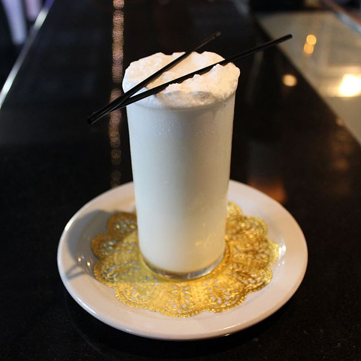

Ramos Gin Fizz Recipe

Description
The drink, which combines gin, citrus, simple syrup, egg white, heavy cream, orange flower water and club soda, is a panoply of flavors and textures.
- 50ml Gin
- 25ml Sugar
- 15ml Lemon Juice
- 15ml Lime Juice
- 3 dashes Orange Flower Water
- 1 fresh Egg White
- Soda Water to top up
- Combine into shaker gin, sugar, lemon and lime juice, three dashes orange water and one egg white
- Dry shake, that is shake the ingredients without ice
- Add ice to the shaker and shake all ingredients again for a minute
- Strain the mixture into a chilled collin glass
- Top up with soda